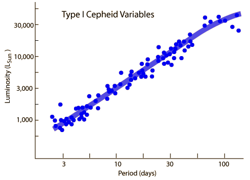
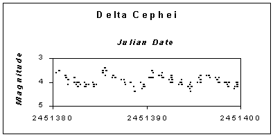

Cepheid Variables
Named after delta-Cephei, Cepheid Variables are the most important type of variable because it has been discovered that their periods of variability are related to their absolute luminosity. This makes them invaluable as a contributer to astronomical distance measurement. The periods are very regular and range from 1 to 100 days.

The shape of the Cephiad luminosity curve is often referred to as a "shark fin" shape when plotted as magnitude vs period. It should be noted that the smooth curve is an average behavior. There is considerable scatter about such a curve, at least in the observations. 
The above period-luminosity curve plotted as a function of multiples of the Sun's luminosity (Bennett, et al.) shows the kind of scatter in the dependence of absolute luminosity on period. A Cepheid variable nevertheless gives a good indication of distance when used as a standard candle. The distances to 273 such Cepheid variables were measured directly by stellar parallax by the Hipparcos satellite. There is some scatter in the measured luminosity as well.
Consider a collection of data posted by the AAVSO from their international database:

This composite light curve is described as being composed of almost 750 observations from 35 observers. Despite the apparent scatter, the long term reproducibility of this pattern has led to a value of 5.366 days for the period of delta Cephei. Many Cepheids have periods that are known to the second according to AAVSO.
The Cepheid variables described above are from Population I stars and are sometimes called Type I Cepheids. There is another class of variable star called a W. Virginis Cepheid which is about 4 times less luminous. They are from older, metal-poor star populations (Population II) and are sometimes called Type II Cepheids.
References:
http://www.aavso.org/ American Association of Variable Star Observers home page.
http://www.aavso.org/vstar/vsots/0900.shtml
Document celebrating delta Cephei as "Variable Star of the Month" in September 2000.
|